AkinoHouse
AkinoHouse诞生于2025年8月27日。
这里承载了Akino的许多创作，包括游戏和音乐；同时也有Akino的激推歌手 *葉月ゆら* 的歌曲分享。或许自此，这个网站也能用作博客了也说不定...？
对于游戏，最希望做好的是音游。Wormy
Chompers做了很久，之前用AI写了绝大部分代码，弄成了个小游戏。那之后又感觉这音游确实有些意思，于是自己学了点SDL，做出来了自己的游戏（虽然AI的辅助还是少不了……）。
当然，音乐创作也是个有趣的事情！受葉月さん影响，曲风全成了哥特+奇幻风www
在这里也向大家激推她的歌！当然，纯音乐也是很不错的（快点去“Yura音乐分享”那里听 o((>ω< ))o ）
最后感谢大家对笨蛋Akino的支持！
- AkinoGame -
Wormy Chompers (version 1.0)
下载 Wormy Chompers (version 1.0)
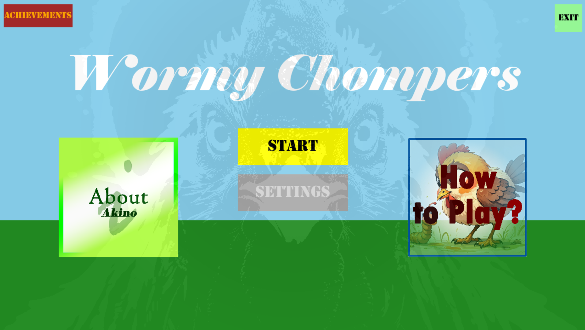
Main Menu
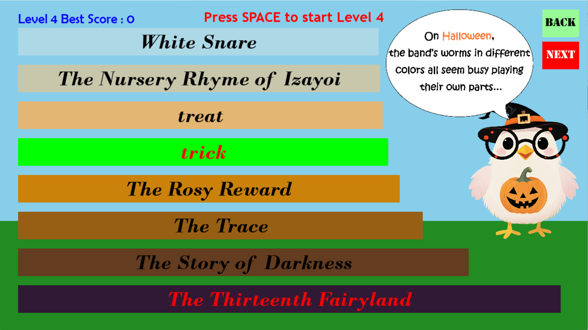
Level Select Screen
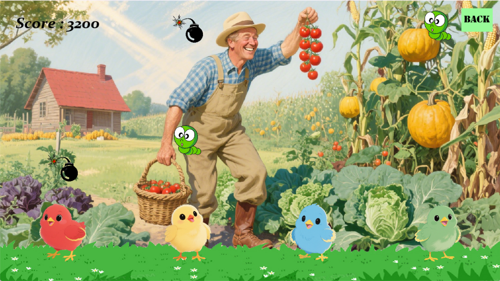
Game Screen
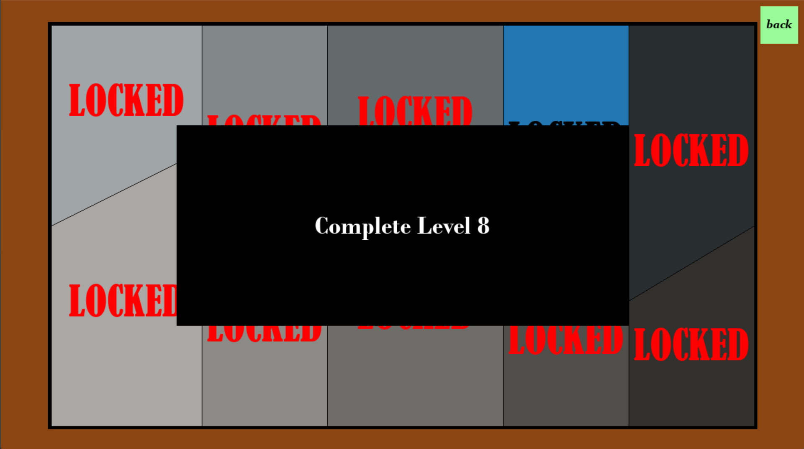
Achievements Screen
Music by Akino
( MYASSK )
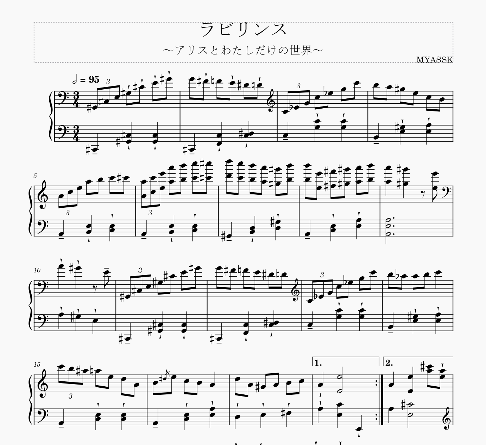
ラビリンス
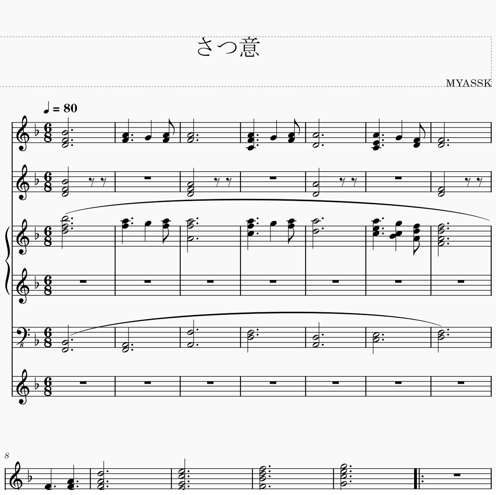
さつ意
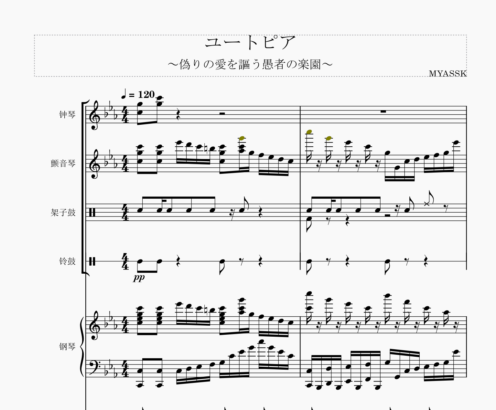
ユートピア
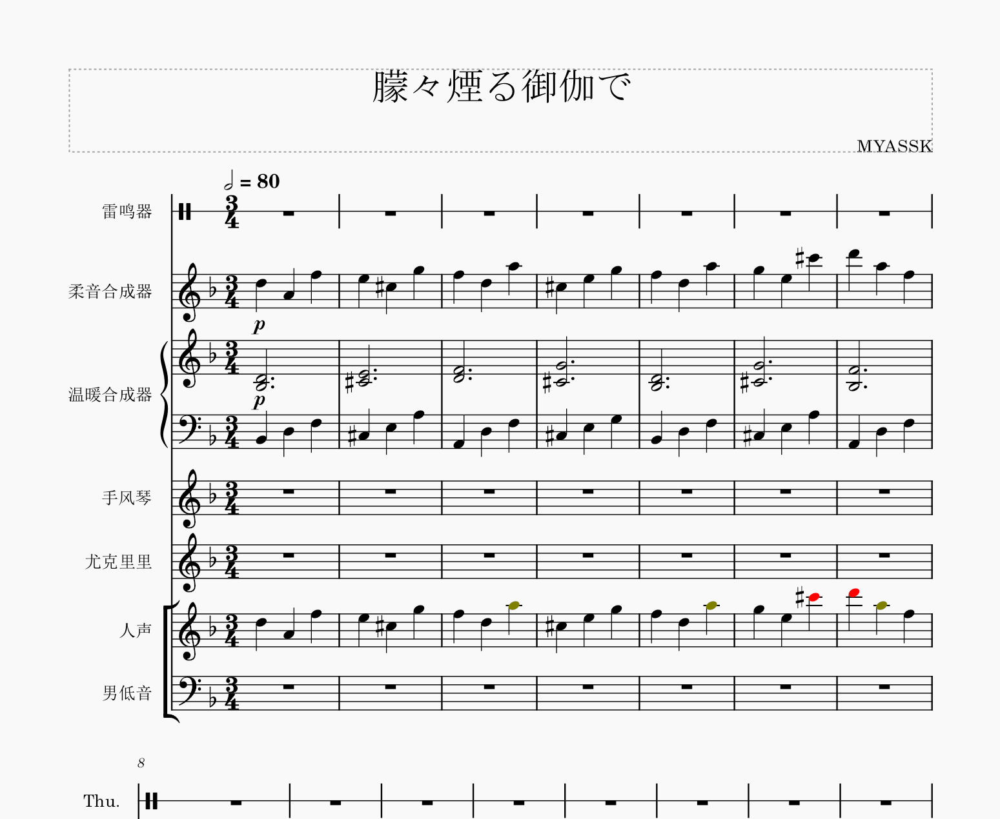
朦々煙る御伽で
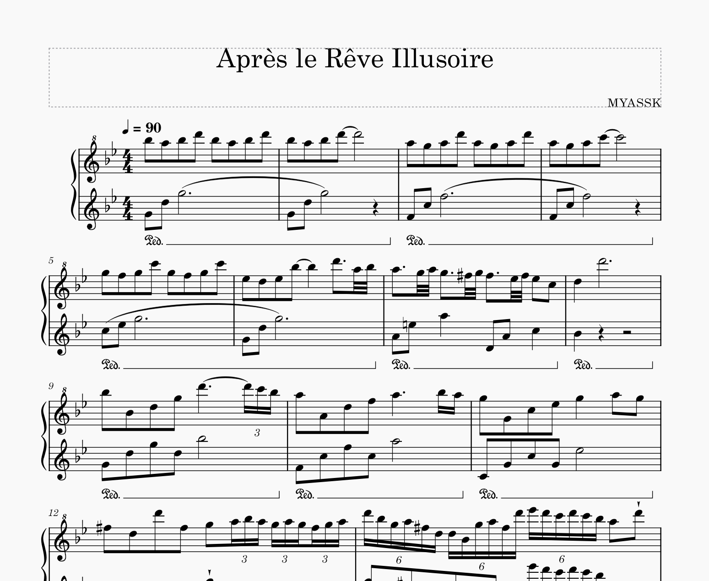
Après le Rêve Illusoire
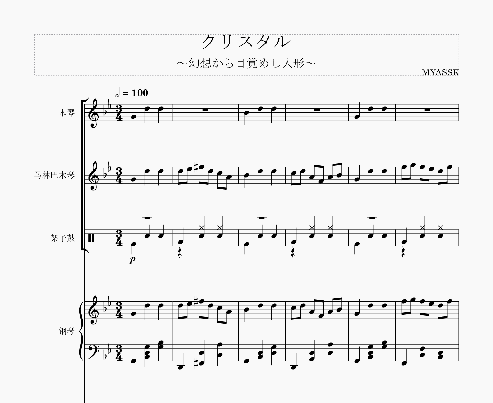
クリスタル
Yura Hatsuki's Music Recommendations
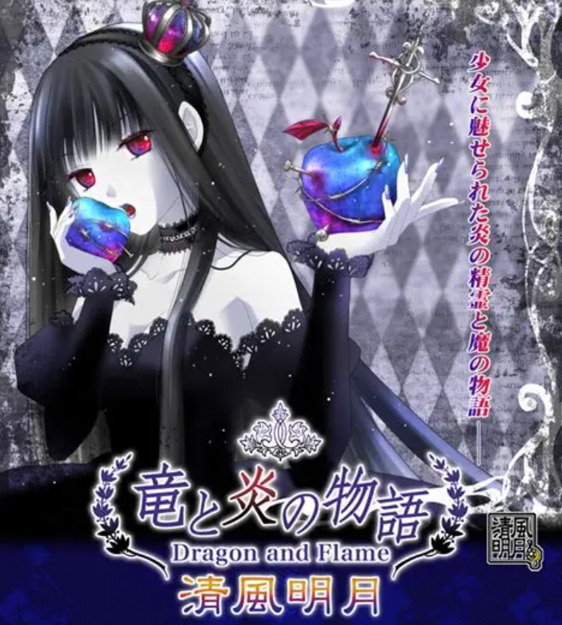
サラマンドラの踊り子
作詞：葉月ゆら 作編曲：Drop
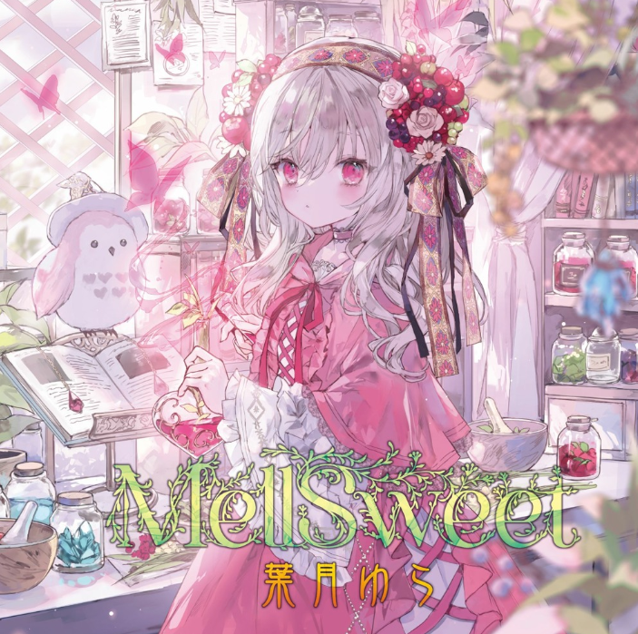
悪役令嬢の顛末
作詞・作編曲：あ子 MIX：Drop
经典反派大小姐……高三写的一篇感慨文借用了这个标题（）这首歌在我心里，排top15之列是没问题的O(∩_∩)O
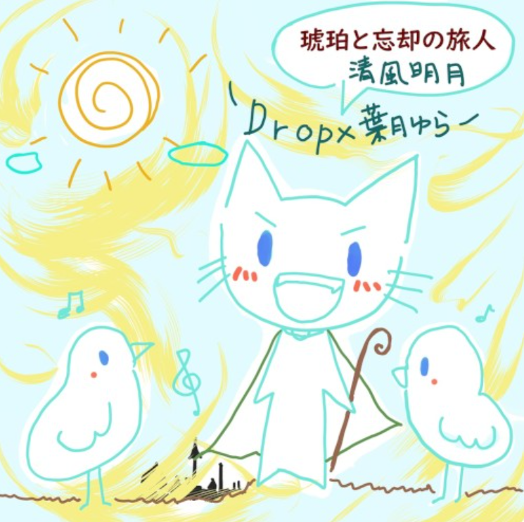
琥珀と忘却の旅人
作詞：葉月ゆら 作編曲：Drop
必须排名top5之列的一首。当时无比喜欢这首歌，还幸运地在网上找到了钢琴谱（感谢大佬扒谱）！练习了很多遍……于是这首成为了我唯一一首会弹的叶月的歌www
入坑油蜡的起点。初中时第一次听，如今依旧是神曲。